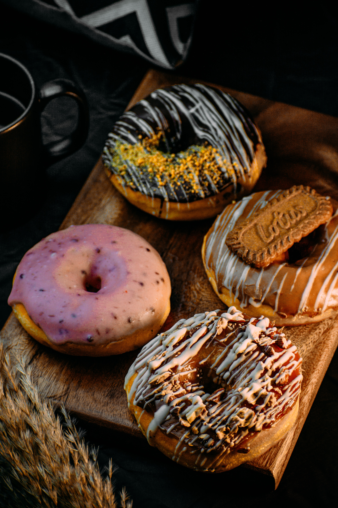

Description
All the world's great donuts are fried, except there are a few rare expamles of when they are not--and this incredibly delicious and easy to make apple cider donut is one notable exception. Since we are not going to fry these, not only are they easier, but they are was less messy. Less time cleaning up means more time eating donuts.
Ingredients
- 2 cups fresh apple cider
- 2 cups all-purpose flour
- 3/4 teaspoon baking powder
- 3/4 teaspoon baking soda
- 1/4 teaspoon fine salt
- 1 teaspoon ground cinnamon
- 1 pinch ground cardamom
- 1 pinch freshly grated nutmeg
- 1/2 cup white sugar
- 1/2 cup packed brown sugar
- 1/2 cup warm oat milk
- 3/4 teaspoon vanillat extract
- 1 flaxseed egg
Steps
- Preheat the oven to 375 degrees F(190degreesC). Butter two 6-cup donut pans
- Pour apple cider into a saucepan and palce over medium heat. Bring to a simmer and let it cook, watching carefully, untill the cider is reduced to 1/2cup. If it reduces too much, add enough water to make1/2cup. Set aside untill needed.
- Add flour, baking powder, baking soda, salt, 1 teaspoon cinnamon, cardamom, and nutmeg to a large bowl. Mix with a whisk until combined and set aside until needed.
- Whisk 1/2 cup white sugar, brown sugar, oat milk, vanilla extract, and flaxseed egg together in another bowl until combined. Add the apple cider reduction and the dry ingredients. Whisk together to form a slightly thick batter; do not overmix.
- Spoon or pipe the batter into the prepared donut pans, filling them about 3/4 of the way up
- Bake in the center of the preheated oven until the tops are lightly browned, and the donuts spring back slightly to the touch, 10 to 12 minutes. Let cool for 10 minutes in the pans before removing to a sheet pan lined with a silicon baking mat. Cut out any donut holes as necessary.
- If desired, while still slightly warm, brush the donuts lightly with remaining melted butter. Mix 1 cup white sugar and 1 tablespoon cinnamon together for topping in a shallow dish; toss in donuts to coat. Let cool completely before serving.
Return to the top
Previous page